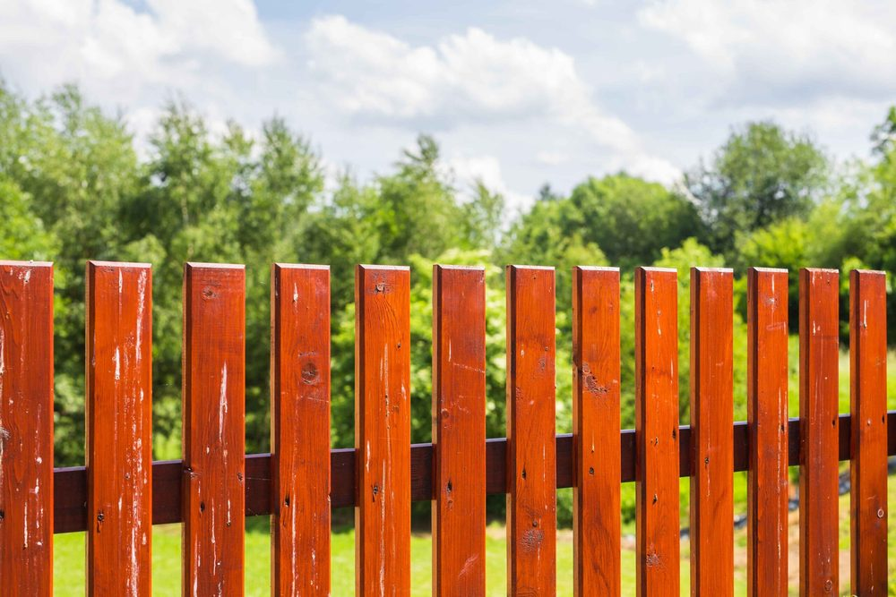
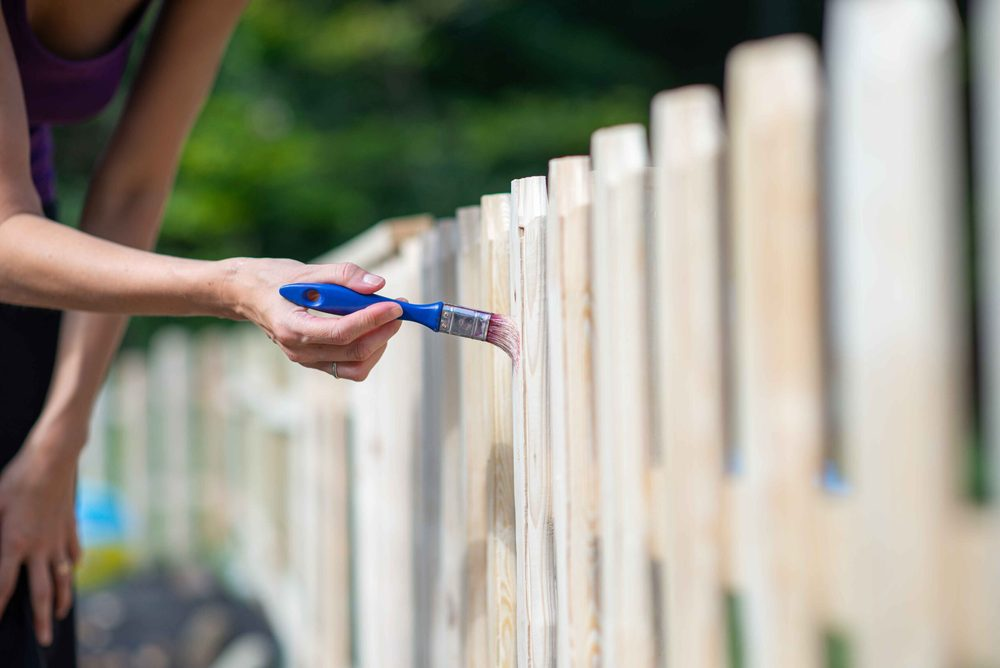

In This Guide
- Sealing works in a set order: inspect, clean, dry, sand, apply, and add a second coat once the first has cured.
- Wood must be fully dry before any sealer goes on, and in Louisiana humidity that can take longer than you expect.
- Work in small sections, follow the grain, and stay within the drying times printed on the product.
- A simple water test tells you when a sealed fence is due for another coat.
Sealing is the cheapest insurance a wood fence can get. A few days of prep and one careful afternoon with a sprayer or roller keep water out of the boards and slow the fading and mildew that wear a fence down.
This is a hands-on walkthrough from Big Easy Fence. It covers what to gather, how to prepare the fence, how to apply the sealer, and how to tell when it is time to do it again. If you are still choosing a product, start with our comparison of top fence sealers and come back here when you have a can in hand.
Why an Unsealed Fence Fails Early
Bare wood absorbs water like a sponge. In New Orleans humidity, boards stay damp for long stretches, and damp wood swells, shrinks, and eventually cracks. Mold and mildew move in, and the sun bleaches the surface gray.
A wood fence that has been sealed sheds most of that water and blocks much of the UV light. The wood stays stronger and looks better for longer, which puts off repairs and early replacement.

Before You Start: Timing and Supplies
Pick a Dry Window
Choose a stretch of days with no rain in the forecast. Wet boards will not absorb sealer, and rain on a fresh coat can spot or wash it away. Avoid the hottest part of the day too, since sealer can dry too fast in direct midday sun and leave lap marks. Check the product label for the temperature range it needs.
Gather What You Need
- Cleaning supplies. A stiff brush, a garden hose, and a wood cleaner or mildew cleaner made for outdoor use.
- Repair materials. Exterior screws, replacement boards, and wood filler.
- Sandpaper or a sanding block. Medium grit is usually enough for splinters and rough spots.
- Application tools. A sprayer, roller, or brush, plus a small brush for edges and corners.
- Protection. Gloves, eye protection, and a mask, plus a drop cloth for plants and walkways.
Prepare the Fence
Prep decides how long the sealer lasts. Skipping it is the most common reason a fresh coat peels or looks patchy.
Step 1: Inspect and Repair
Walk the whole fence. Tighten loose screws, replace boards that are split or soft, and fill small cracks and holes. Repairs done now keep the finish from showing every flaw later. For damage bigger than a few boards, call our fence repair team before you seal.
Step 2: Clean the Surface
Scrub off dirt, algae, and mildew with a wood cleaner, then rinse well so no residue remains. A pressure washer can strip grime quickly, but use a low setting and keep the nozzle moving. High pressure gouges wood and raises the grain.
Step 3: Let the Wood Dry
This step gets rushed more than any other. The fence needs to dry completely, which often takes a day or two of good weather and can take longer in humid conditions. Sealer trapped over damp wood can cloud, blister, or peel.
Step 4: Sand Rough Spots
Sand splinters and raised grain until the surface feels smooth to the hand. This helps the sealer soak in evenly, so the finish looks consistent from board to board. Wipe the dust away before you start coating.
Apply the Sealer

Step 5: Coat in Small Sections
Start at the top of a section and work down so any drips land on wood you have not coated yet. Work in areas small enough to keep a wet edge, and move with the grain so the sealer soaks in deep. Do not let it puddle on rails, post tops, or the bottom of boards. Wipe up drips right away, and keep the end grain well covered because it absorbs the most water.
Step 6: Add a Second Coat
Many products call for a second coat, and some call for it while the first is still slightly tacky. Follow the label. Where the label says to let the first coat dry, a full day is a common wait, and humid days may need longer. Add the second coat only when the first is dry to the touch, and skip it if the manufacturer says one coat is enough.
Mistakes That Ruin a Sealing Job
- Sealing damp wood. Moisture trapped underneath causes peeling and cloudy patches.
- Skipping the cleaning step. Sealer that lands on dirt and mildew has nothing solid to grip, so the coat fails early.
- Applying too thick. A heavy coat can stay sticky and attract dirt instead of soaking in.
- Ignoring the forecast. A rain shower in the first day or so can undo hours of work.
- Forgetting the bottom edges. Boards near the ground take on the most moisture and need full coverage.
How to Know When to Reseal
Skip the calendar and use the water test. Sprinkle a little water on the fence. If it beads up, the sealer is still working. If it soaks in and darkens the wood, the coating has worn thin and it is time to clean and recoat. How often that happens depends on the product, the sun, and how much rain the fence sees.
Resealing a fence that still has some finish is far easier than stripping one that has peeled. Test in spring and again before the wet part of the year.
When to Hand It Off
Sealing a short, low fence is a good weekend project. Long runs, tall fences, and fences with rot or lean take more time, more tools, and more experience. A professional crew can prep, repair, and coat a long fence in far less time than a homeowner working alone.
If you would rather have someone look at the fence first, ask about a free estimate and we can talk through what it needs.
Want Your Fence Sealed the Right Way?
If the prep work or the ladder time sounds like too much, talk to us. Tell us about your fence and we will tell you what it needs.